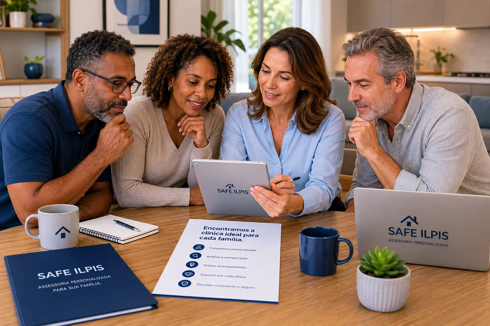

Existem famílias que descobrem o problema depois da matrícula. Este artigo existe para que você entenda a matemática real de uma ILPI regularizada antes de qualquer visita — e saiba exatamente o que um preço muito baixo pode estar omitindo.

A família está exausta. A decisão é urgente. E então aparece uma casa de repouso com mensalidade significativamente abaixo de todas as outras visitadas. O ambiente parece razoável. A recepcionista é cordial. E a tentação é pensar: "As outras devem estar cobrando demais."
É possível. Mas antes de chegar a essa conclusão, existe uma pergunta mais importante — e mais honesta: "Como essa operação se sustenta com esse preço?"
Este artigo não acusa ninguém. Não é uma lista negra. Existem residenciais honestos com mensalidades acessíveis — especialmente em regiões com menor custo operacional ou com estrutura filantrópica documentada. Mas mensalidades de R$ 2.000 ou R$ 2.500 em operações privadas, sem subsídio conhecido, em cidades como São Paulo, são matematicamente difíceis de explicar com equipe completa e documentação regular.
O que este guia faz é mostrar a conta real — para que a família tenha as perguntas certas antes de qualquer decisão.
Segundo o IBGE, o Brasil conta com mais de 6.000 ILPIs — incluindo públicas, filantrópicas e privadas. Apenas uma pequena fração cobra abaixo de R$ 4.000 mensais. A faixa mais praticada por residenciais privados regularizados em centros urbanos fica entre R$ 5.000 e R$ 7.000 mensais por residente.
Atenção: aproximadamente 90% das ILPIs no Brasil cobra acima de R$ 4.000 mensais por razões operacionais objetivas. Mensalidades muito abaixo dessa faixa em regiões de alto custo não indicam, necessariamente, um mau caráter — mas indicam, quase sempre, que algo no modelo operacional é diferente do padrão regulatório.
Vamos usar como referência uma ILPI privada documentada com capacidade para 20 residentes — um porte bastante comum no mercado. Os valores abaixo são baseados nas exigências legais e na realidade do mercado em 2026.
A RDC 502/2021 da Anvisa define o ratio mínimo de cuidadoras por residente. Para 20 residentes com perfil misto, a operação regulamentada exige aproximadamente 10 cuidadoras registradas para cobrir todos os turnos.
| Profissional / Função | Quantidade | Custo operacional unitário | Total mensal |
|---|---|---|---|
| Cuidadoras registradas (CLT + encargos) | 10 | R$ 3.800 | R$ 38.000 |
| Cozinheira + auxiliar | 2 | — | R$ 4.500 |
| Faxineira + auxiliar de limpeza | 2 | — | R$ 4.600 |
| Médico (visitas mensais) | 1 | — | R$ 3.500 |
| Enfermeiro registrado | 1 | — | R$ 6.500 |
| Nutricionista (visitas semanais) | 1 | — | R$ 2.500 |
| Subtotal — Folha de profissionais | R$ 59.600 | ||
Atenção ao número real: o custo operacional de R$ 3.800 por cuidadora já inclui salário, FGTS, INSS patronal, férias proporcionais, 13.º proporcional e vale-transporte. Não é o salário-base — é o custo total para a empresa. São R$ 38.000 apenas em cuidadoras, antes de qualquer outra despesa.
A Anvisa exige que ILPIs ofereçam seis refeições diárias por residente: café da manhã, lanche matinal, almoço, lanche vespertino, jantar e ceia. Para 20 residentes, isso não é um café da manhã rápido — é uma operação de alimentação contínua.
Somando o custo da equipe de cozinha (R$ 4.500/mês) com o custo dos insumos alimentares (aproximadamente R$ 500 a R$ 600 por residente ao mês), chegamos a um custo total de alimentação entre R$ 14.500 e R$ 16.500 mensais para 20 residentes — apenas para garantir a nutrição mínima exigida por lei.
Esse valor não inclui dietas terapêuticas, suplementação ou alimentação por sonda — custos adicionais comuns em perfis de Grau III de dependência.
Somando todos os elementos de uma operação legal e completa para 20 residentes, chegamos a um número que explica por que mensalidades muito baixas são operacionalmente difíceis de justificar.
Dividido por 20 residentes = aproximadamente R$ 4.605 por residente em custo operacional — antes de qualquer tributação sobre a receita. Esse número não inclui contingências, melhorias de infraestrutura, marketing ou margem operacional mínima.
Uma ILPI que opera legalmente paga impostos sobre sua receita: ISS, PIS, COFINS e CSLL, entre outros. Em uma mensalidade de R$ 5.000, aproximadamente R$ 1.500 podem ir para tributos e deduções obrigatórias.
O que esse número mostra: com custo operacional de R$ 4.605 por residente e receita líquida de R$ 3.500, mesmo uma mensalidade de R$ 5.000 já gera pressão financeira significativa. Com R$ 2.000 ou R$ 2.500 mensais, a equação operacional é praticamente impossível — a menos que custos essenciais estejam sendo cortados em algum lugar.
Considerando o custo operacional total, a tributação sobre a receita e uma margem mínima para contingências e manutenção, uma ILPI privada bem estruturada em São Paulo precisa de uma mensalidade próxima de R$ 5.500 por residente para operar com sustentabilidade real.
Em anos de avaliação presencial de centenas de residenciais em São Paulo e Grande SP, a SAFE ILPIS nunca encontrou uma ILPI totalmente documentada, com equipe legal completa e estrutura adequada, operando sustentavelmente por R$ 2.000 mensais em centros urbanos.
Encontramos, raramente, casos excepcionais na faixa de R$ 3.000 a R$ 3.500 — com subsídio parcial, localização estratégica ou modelo diferenciado. Mas são exceções que confirmam a regra, não padrão de mercado. Encontrá-las é como encontrar um carro zero-quilômetro pela metade do preço de tabela: possível, mas exige explicação.
"A questão não é se o preço é baixo.— Equipe SAFE ILPIS
A questão é: o que foi suprimido para que esse preço fosse possível?"
Seria injusto terminar este artigo sem a nuance necessária. Preço não é destino — mas é um indicador que merece atenção. Esses são os quatro perfis que existem no mercado:
Uma casa de repouso que opera sem as devidas licenças raramente vai admitir isso diretamente. O que você ouvirá, na maioria das vezes, são variações de:
Importante: estar "em processo de licenciamento" significa estar operando sem licença vigente. Durante esse período, a operação não tem o amparo regulatório que protege a família e a pessoa que mora no local. Se algo acontecer, a família enfrentará esse cenário fora do arcabouço legal normal.
As interdições de casas de repouso que aparecem nas notícias quase sempre envolvem operações irregulares ou clandestinas — não ILPIs totalmente documentadas e regularizadas. Isso não é coincidência: é consequência direta da ausência de supervisão regular.
Imagine receber uma ligação informando que o residencial onde seu familiar mora foi interditado e precisa ser desocupado em até 72 horas. Não há tempo para visitar alternativas com cuidado. Não há tempo para comparar. A família precisa decidir — agora — sob pânico.
Para a pessoa idosa, essa mudança abrupta de ambiente não é apenas desconfortável. É clinicamente e emocionalmente desestabilizadora — especialmente em pessoas com comprometimento cognitivo, demência ou alta dependência funcional.
Desorientação súbita. Interrupção de rotinas que levaram meses para se estabelecer. Perda de vínculo com cuidadores já conhecidos. Risco de regressão clínica documentada. Possível necessidade de hospitalização de emergência.
Esse é o custo real que não aparece em nenhuma mensalidade baixa. E é o motivo pelo qual verificar a regularidade de uma ILPI antes de qualquer decisão não é excesso de cuidado — é o mínimo responsável.
A SAFE ILPIS avalia documentação, equipe, protocolos e estrutura real dos residenciais — antes de indicar qualquer um deles. Gratuitamente para as famílias.
✓ Sem compromisso · ✓ No seu tempo · ✓ 100% gratuito para famílias
A família que busca uma casa de repouso geralmente pesquisa por alguns dias, emocionalmente exausta, sem critérios técnicos, em uma região limitada. A SAFE ILPIS avalia residenciais diariamente — com critérios documentados, verificação presencial e histórico de parcerias que podem ser encerradas quando os padrões não são mantidos.
Alvará e documentação: verificação presencial do status regulatório junto à Vigilância Sanitária.
Equipe e ratio: confirmação do número real de profissionais por turno — incluindo noite e fins de semana.
Emergências: plano documentado, equipe treinada e acesso real a hospital de referência.
Medicação: protocolo de administração, supervisão de enfermagem e controle de horários.
Higiene: rotinas observadas in loco — não apenas declaradas durante a visita agendada.
Transparência: política real de comunicação com a família e abertura para visitas não agendadas.
O que a SAFE ILPIS faz de diferente: quando uma parceria não mantém os padrões avaliados, ela é encerrada. Isso não é uma promessa de marketing — é a política que garante que nossas indicações sejam genuínas, não apenas convenientes.
| Elemento avaliado | O que parece bom | O que realmente importa |
|---|---|---|
| Ambiente | Decoração bonita, jardim cuidado | Acessibilidade real, ausência de riscos físicos |
| Preço | Mensalidade baixa e atraente | Coerência com custo operacional real e documentado |
| Atendimento | Recepcionista cordial e prestativa | Equipe técnica real presente em todos os turnos |
| Documentação | Fachada bonita, nome registrado | Alvará vigente, CNPJ ativo, notificação Anvisa |
| Cuidado noturno | Promessa verbal de supervisão | Número real de profissionais acordados por turno |
| Alimentação | Cardápio impresso na recepção | Nutricionista responsável e 6 refeições diárias reais |
| Emergências | Menção verbal a "protocolos" | Plano documentado com equipe treinada e testada |
A SAFE ILPIS encontra residenciais que combinam documentação regular, equipe adequada e custo coerente com a realidade — sem que você precise fazer esse trabalho sozinho.
Falar com especialista — é gratuito